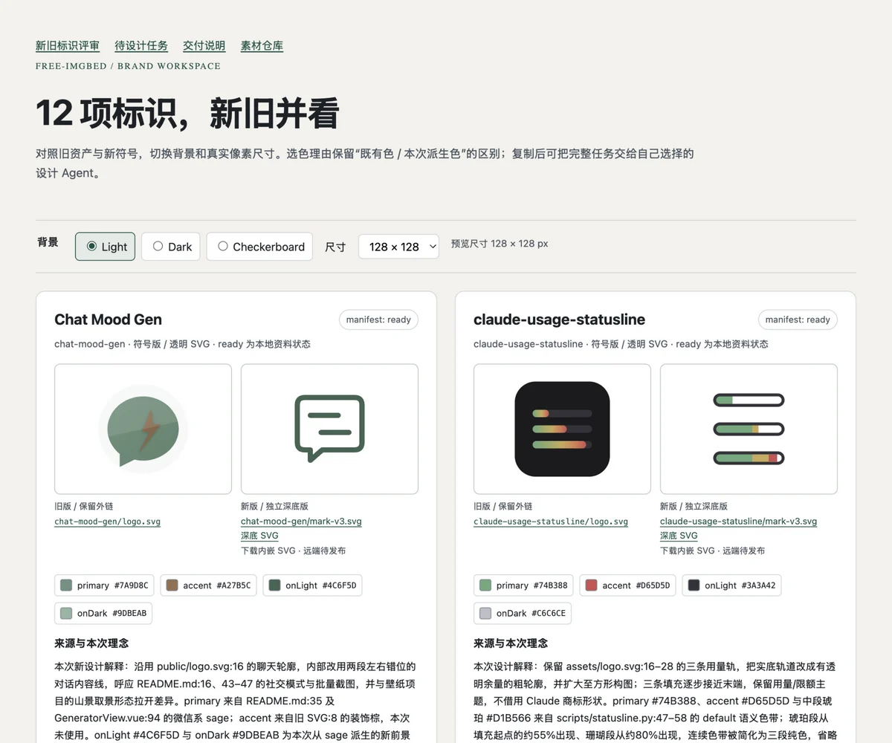
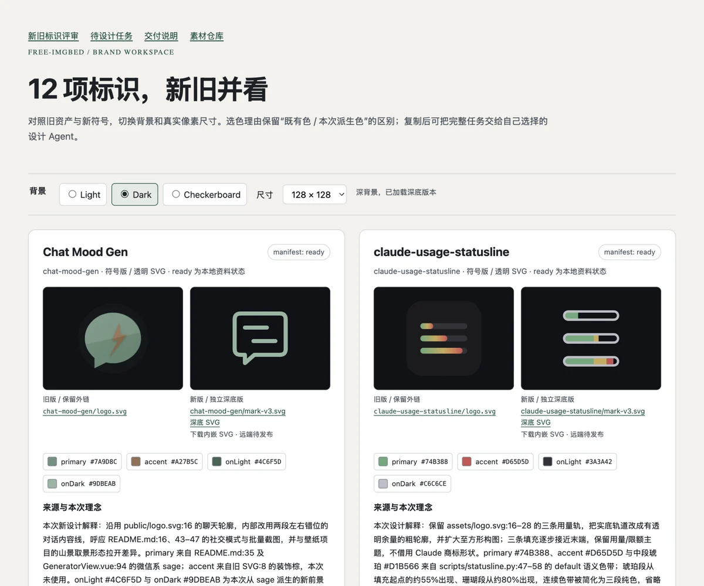

真实浏览器截图留档
以下截图拍自本次生成的 HTML 评审页面，1200 × 1000 视口，128px 标识。转换为 WebP 以减少归档体积，未修改页面内容。截图展示首屏两个项目，完整 12 项及主题切换请打开交互评审页。


验收范围
| 检查 | 实际结果 |
|---|---|
| 主题和尺寸 | 深浅底切换、32px 实际图宽与高已核对；复制任务按钮已实点并显示成功反馈。 |
| 移动布局 | 390px 视口，文档宽 390px，无横向溢出，预览图实际 32px。 |
| 移动截图 | 未保存：浏览器截图准备连续超时。未用桌面截图裁切冒充手机截图。 |
| SVG 工程检查 | 12 份 manifest、23 枚 SVG 的 32/64/128/256px 渲染、alpha 和安全结构检查通过。 |
这些截图是一次验收记录，不代表全部项目、所有背景或未来版本的自动通过。